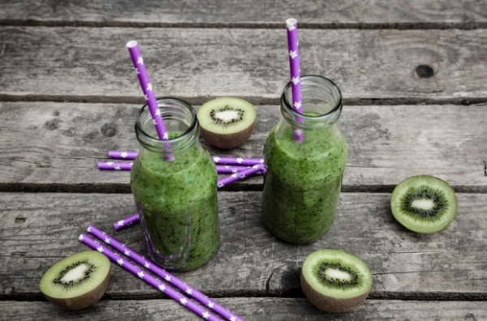

Як приготувати ефективний коктейль для схудення: рецепт

Якщо ви в здогадках, чим можна харчуватись в час відпустки тими чи іншими продуктами, то цей рецепт спеціально для вас. Для нього не потрібно багато продуктів, а сам напій виходить дуже бюджетним.
Рецепт такого напою дуже простий і його можна чудово використовувати замість сніданку і залишатись ситим на довгий час. Цей коктейль також містить багато вітамінів, які відмінно покращать ваш імунітет.
Інгредієнти (на одну порцію): 1 середнє ківі, 2 колечка лимону (разом з цедрою), 7-10 гілочок петрушки, 6-8 гілочок м’яти, 100 мл чистої негазованої води, 1-2 ч.л. меду.
Рецепт приготування:
- Очистіть ківі та розріжте його на 4-5 частин ківі. Після цього відправте в чашу блендеру.
- Вкиньте до суміші два тонких колечка лимону (разом з цедрою) і петрушку.
- Додайте до маси листя м’яти і мед.
- І наприкінці завершіть все вмістом води, подрібнивши все до стану пюре. Споживайте напій холодним.